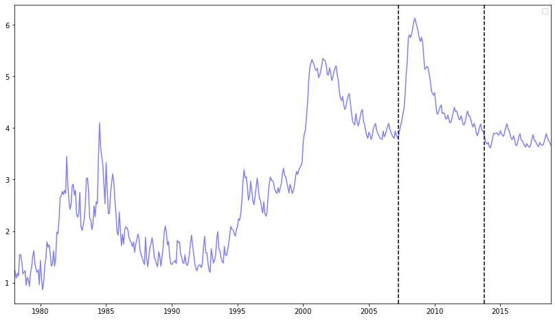

第 3 章 資料與方法
本章節將介紹資料處理與方法，從傳統的統計量、統計檢定、時間序列模型SARIMA，再進到神經網路。
3.1 資料
台灣失業率，是由主計處的每月失業率原始資料，從1978年1月至2019年12月，選擇以十大建設開始後為時點至新冠病毒影響前，資料沒經過季節調整。資料分群的方式分做訓練、驗證及測試集，而SARIMA則將訓練與測試合併為訓練集。資料1978年1月至2008年3月作為訓練集，占總資料的70%；資料2008年4月至2013年9月作為驗證集，共78筆，占總資料的15%；資料2013年10月至2019年12月作為測試集，共75筆，占總資料的15%。
神經網絡的資料分群是為了在偏差-方差權衡(Bias–variance tradeoff)中找到平衡點，也就是避免參數的估計只在訓練集有高度擬合，在測試集卻過度擬合，而透過驗證集協助訓練及訓練出的模型，在偏差與方差間調整，確保測試集中的預測狀況與訓練集不會相去太遠。
\[ Bias[\hat{f(x)}] = E[\hat{f(x)}-f(x)] \]
\[ Variance[\hat{f(x)}] = E[(\hat{f(x)}-E[\hat{f(x)}])^2] \]
3.2 台灣失業率趨勢圖
圖3.1 顯示1978年1月至2019年12月的台灣失業率，資料顯示此段期間資料型態可能有出現結構性的改變，在2003年1月資料中可見到較大的跳躍。

圖 3.1: 失業率趨勢圖
3.3 類神經網絡的資料標準化
將原始水準值轉換到[0,1]區間，可以加快類神經網絡的收斂速度。以下列方式進行標準化: 標準化方式為:原始水準值扣除最小值，再除以整體資料的分布範圍，也就是最大值減去最小值，以數學式表示如下: (原始水準值 - 最小值)/(最大值 - 最小值)， 但在最後判斷預測能力時，會轉換為相對於原始失業率的預測誤差。